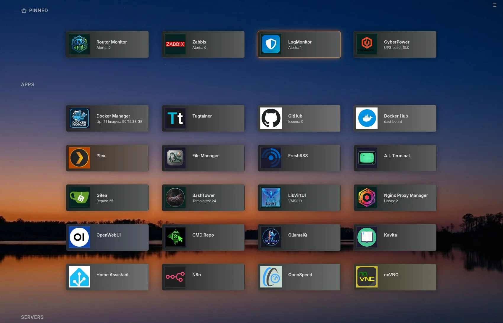
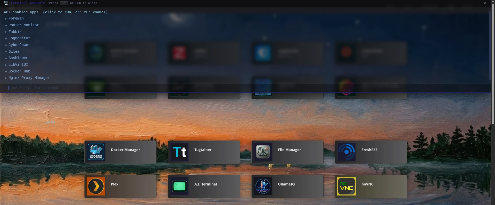

Dashboard
A lightweight, self-hosted application launcher & monitoring dashboard built with Python + Flask.
A lightweight, self-hosted application launcher & monitoring dashboard built with Python + Flask.

Choose the installation method that fits your environment. The dashboard listens on port 6008 by default.
# Pull from Docker Hub
docker pull ftsiadimos/dashboard:latest
docker run -d --restart unless-stopped \
-p 6008:6008 \
--name=dashboard \
-v $(pwd)/data:/app/data \
ftsiadimos/dashboard:latest# Or pull from GitHub Container Registry
docker pull ghcr.io/ftsiadimos/dashboard:latest
docker run -d --restart unless-stopped \
-p 6008:6008 \
--name=dashboard \
-v $(pwd)/data:/app/data \
ghcr.io/ftsiadimos/dashboard:latest# docker-compose.yml
version: '3.8'
services:
dashboard:
image: ftsiadimos/dashboard:latest
container_name: dashboard
ports:
- "6008:6008"
volumes:
- ./data:/app/data
restart: unless-stoppeddocker-compose up -dgit clone https://github.com/ftsiadimos/dashboard.git
cd dashboard
python -m venv venv
source venv/bin/activate # Windows: venv\Scripts\activate
pip install -r requirements.txt
flask run --host=0.0.0.0 --port=6008Then open http://localhost:6008 in your browser and configure via Settings.
Point any app tile at an HTTP endpoint to create a live monitoring card. The dashboard fetches the endpoint at your chosen interval and renders the response using a lightweight template syntax — no plugins, no code required.
API URL https://status.example.com/api/health
Display Template Status: {status}
# Response {"status":"ok"} → "Status: ok"API URL https://weather.example.com/forecast
Display Template {forecast.daily.0.temperature}° / {forecast.daily.0.condition}
# Count items in a top-level array
API URL https://tickets.example.com/open
Display Template {_len} open tickets
# Response [{}, {}, {}] → "3 open tickets"API URL https://status.example.com/api/servers
Display Template Top host: {servers.max_by(cpu).name}API URL https://zabbix.example.com/api_jsonrpc.php
API Method POST
Headers {"Content-Type":"application/json"}
Payload {"jsonrpc":"2.0","method":"problem.get","params":{"output":["problemid"],"countOutput":true},"auth":"TOKEN","id":1}
Display Template {_len} problemsAPI URL https://statuspage.example.com
Display Template regex:<title>([^<]+)</title>
# Extracts the first capture group from the HTML response
Press the configured hotkey (default: `) from any page to slide a
Quake-style terminal panel down. Press it again or hit Esc to close.

| Command | Description |
|---|---|
help | Show all available commands |
list | List all app tiles as clickable rows |
run <name> | Run a tile's API call by name (partial match) |
curl [opts] <url> | Execute an ad-hoc HTTP request |
curl … | jq <filter> | Pipe response through a client-side jq filter |
save <name> curl … | Save a curl command under a name for later replay |
list-custom | List all saved custom commands |
run-custom <name> | Re-run a saved custom command by name |
delete-custom <name> | Delete a saved custom command by name |
search <query> | Filter tiles by name |
clear | Clear the terminal output |
| Flag | Description |
|---|---|
-X <METHOD> | HTTP method (default: GET) |
-H <header> | Add a request header (repeatable) |
-d <body> | Request body (JSON or plain text) |
| Key | Action |
|---|---|
` (configurable) | Toggle terminal open / closed |
Esc | Close terminal |
↑ / ↓ | Walk through command history |
Tab | Autocomplete command or app name |
Open Settings → Terminal Console to customise the trigger key, height, opacity, font size, font family, accent colour, and animation speed.
Released under the MIT License. See the LICENSE file for details.